Zaciskarka VIPER P25+
Virax, zaciskanie
4 651,86 zł
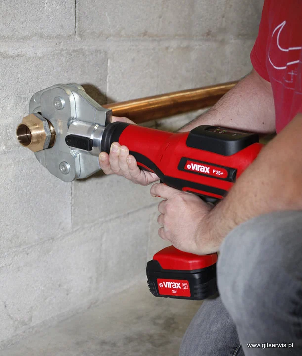
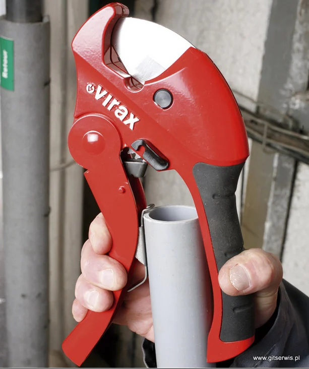
Katowice, ul. Domeyki 10
Od 1989 roku pierwszy i największy w Polsce importer narzędzi VIRAX. Naprawiamy gwarancyjnie i pogwarancyjnie, regenerujemy części, a nie tylko wymieniamy je na nowe.
W ofercie: Virax, RIDGID, Bosch, Makita, Dr. Schulze, Pilous
Narzędzia, maszyny i urządzenia do rur: od klucza po gwintownicę stacjonarną. Kupisz je w sklepie online albo na miejscu przy Domeyki.
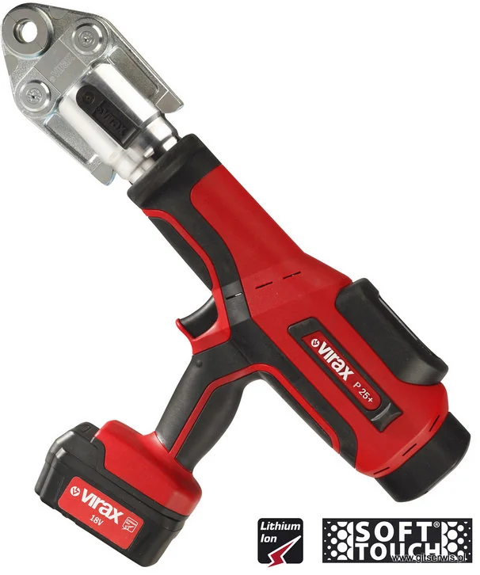
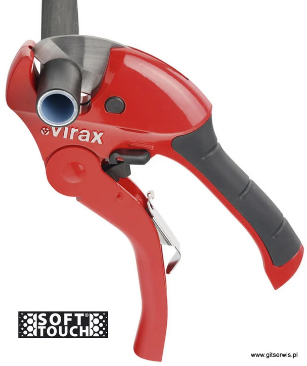
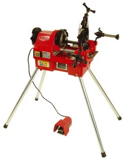
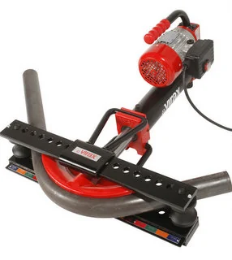
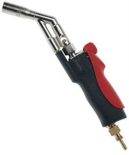
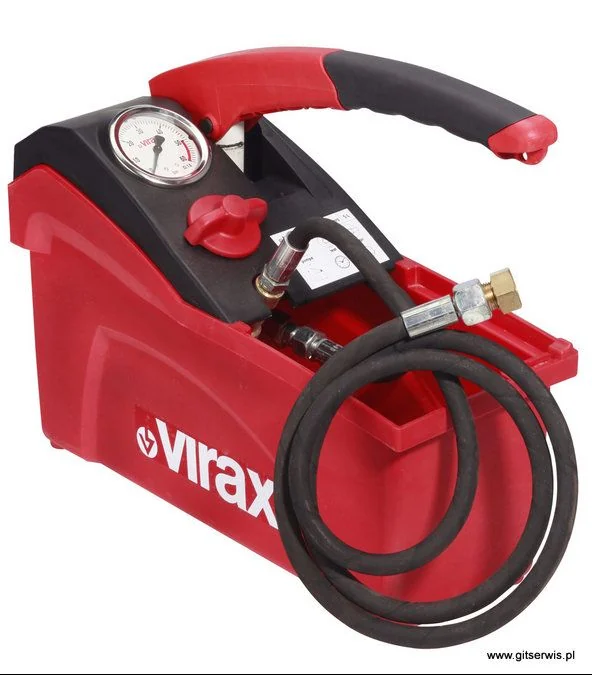
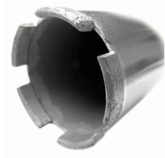
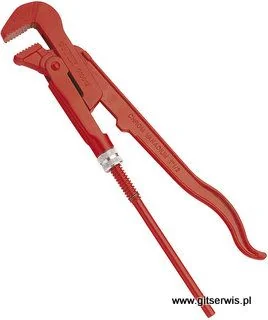
Virax, zaciskanie
4 651,86 zł
Virax, cięcie
223,86 zł
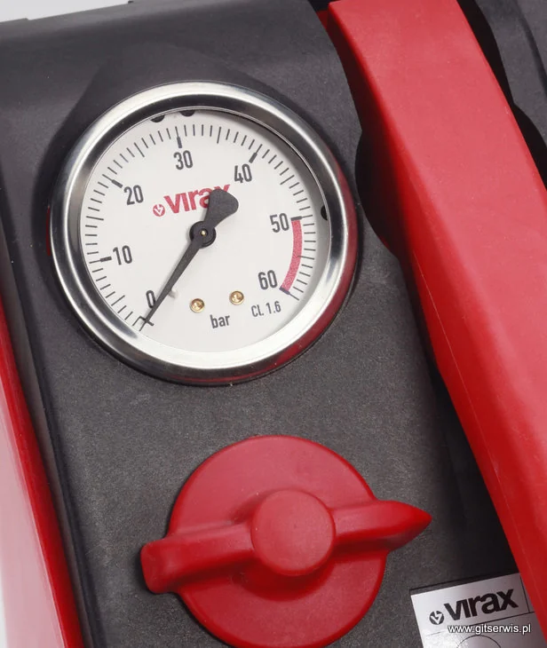
Virax, utrzymanie ruchu
848,70 zł
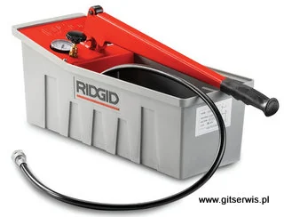
RIDGID, utrzymanie ruchu
1 888,05 zł
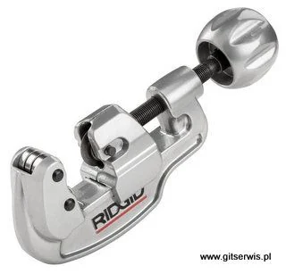
RIDGID, cięcie
327,18 zł
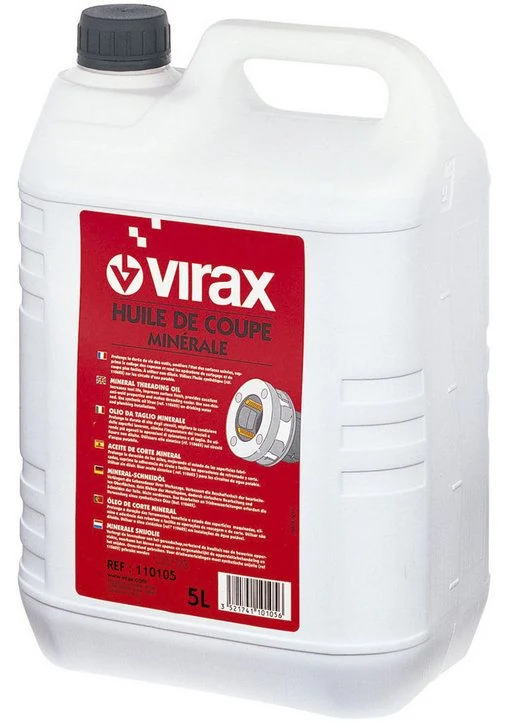
Virax, gwintowanie
196,80 zł
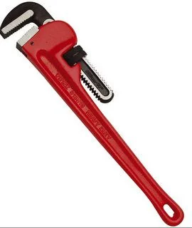
Virax, skręcanie
276,75 zł
Virax, skręcanie
102,09 zł
Ceny brutto ze sklepu gitserwis.pl, stan na 10.11.2026.
Każdą naprawę oceniamy osobno. Tam, gdzie się da, regenerujemy element zamiast wymieniać go na nowy, żeby narzędzie wróciło do pracy i znowu było git.
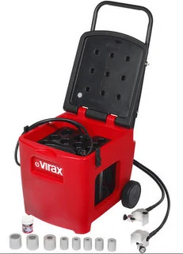
Bez dokumentów naprawa jest traktowana jako pogwarancyjna, z kosztami transportu i weryfikacji.
Zgłoś naprawę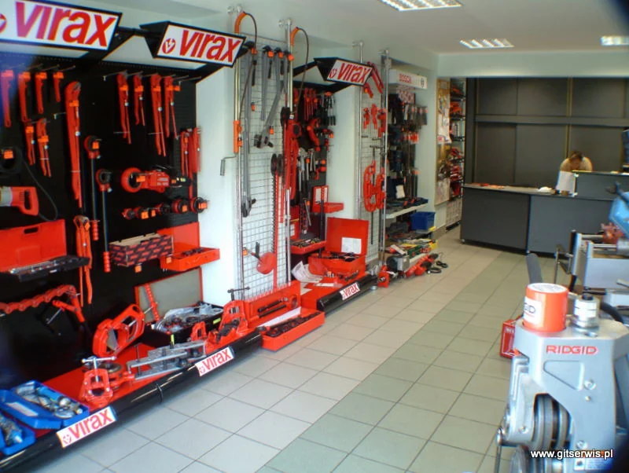
Zaczynaliśmy w 1989 roku jako Z.U.P.H Władysław Grzywacz. Od stycznia 2000 działamy pod nazwą GIT SERWIS, wciąż w tym samym duchu: sprzedajemy narzędzia dla instalatorów i sami je naprawiamy.
Z czasem dołączyliśmy Bosch, Makitę i inne marki. U nas dostaniesz też fachową radę techniczną przy doborze narzędzia.